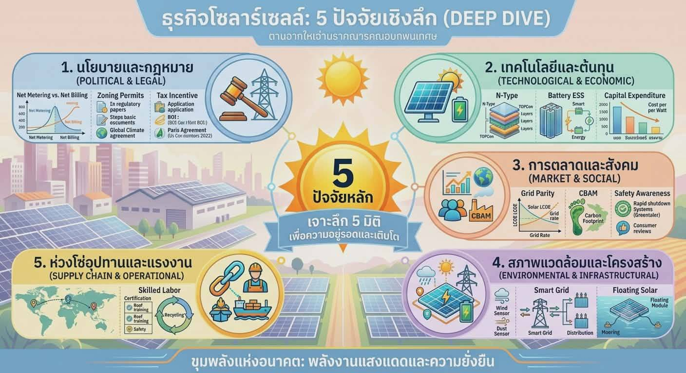
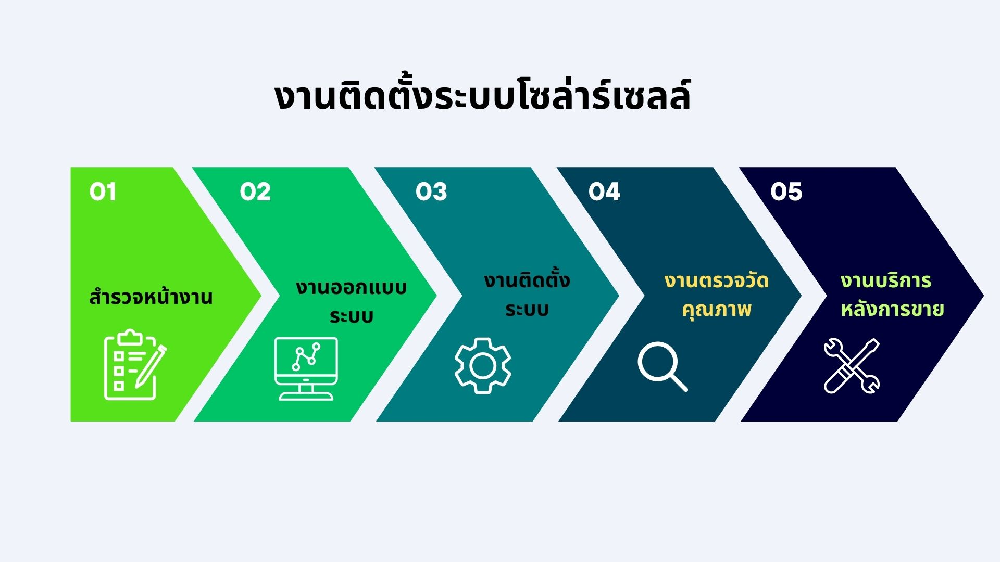
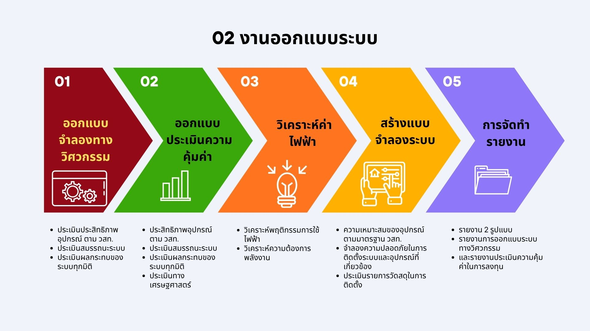
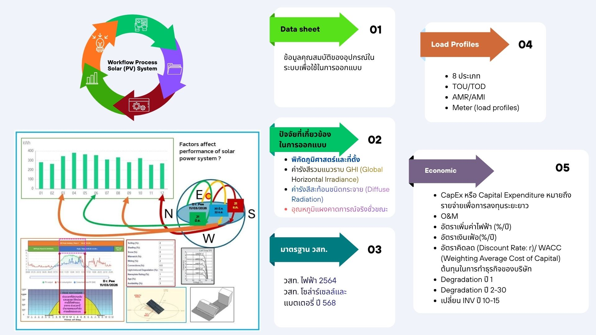
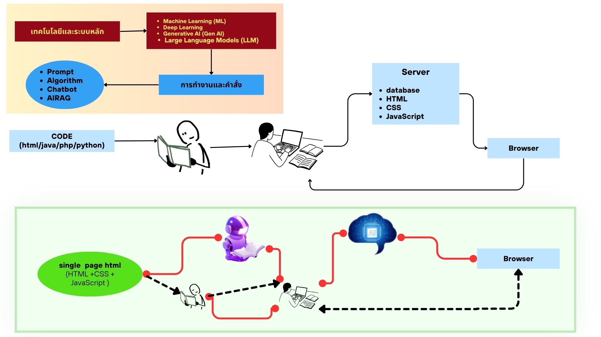

กำหนดเงื่อนไขขอบเขตการทำงาน (Boundary Conditions) ตั้งแต่เรื่อง Net Metering vs Net Billing, การขออนุญาต Zoning, ไปจนถึงแรงจูงใจทางภาษี (BOI) และความตกลงปารีส (Paris Agreement) ซึ่งทำหน้าที่เป็น Regulatory Algorithm ควบคุมทิศทางตลาด
ขับเคลื่อนด้วยนวัตกรรมฮาร์ดแวร์ระดับไมโคร เช่น โครงสร้างเซลล์ N-Type, TOPCon ที่เพิ่ม Quantum Efficiency สูงสุด รวมถึงระบบกักเก็บพลังงานอัจฉริยะ (Smart Battery ESS) โดยแปรผันตรงกับสมการ Capital Expenditure (CapEx) เพื่อคำนวณต้นทุนต่อวัตต์ (Cost per Watt)
ครอบคลุมตั้งแต่จุดคุ้มทุน (Grid Parity), กลไกราคาคาร์บอนข้ามพรมแดน (CBAM), ความปลอดภัย (Rapid Shutdown) ไปจนถึงโครงสร้าง Smart Grid ที่ใช้เซ็นเซอร์ IoT ตรวจวัดฝุ่นและลมแบบ Real-time ผสานระบบ Floating Solar และมาตรการรีไซเคิลใน Supply Chain อย่างครบวงจร

การลงพื้นที่เพื่อดึงข้อมูลเชิงพื้นที่ (Spatial Data) และปัจจัยทางกายภาพต่างๆ เข้าสู่ระบบ เป็นเสมือนการ Data Collection เฟสแรก เพื่อใช้เป็น Input ในการสร้างแบบจำลอง
นำ Data ที่ได้มาผ่านกระบวนการจำลองผล ประเมินพารามิเตอร์ด้านวิศวกรรมเพื่อหา Configuration ที่ให้ประสิทธิภาพการผลิตไฟฟ้าสูงสุด (Optimization) ภายใต้ข้อจำกัดทางกายภาพ
คือกระบวนการ Execute นำระบบขึ้นสู่สถานะใช้งานจริง (Go-Live) ตามด้วยการรันโปรโตคอลตรวจสอบคุณภาพ (Quality Assurance) ขั้นสุดท้าย และเข้าสู่เฟส O&M (Operations & Maintenance) เพื่อเฝ้าระวังและแก้ไขบั๊กของระบบ (System Degradation) ในระยะยาว

การรันโมเดลประเมินประสิทธิภาพฮาร์ดแวร์ อ้างอิงตามมาตรฐานสภาวิศวกร (วสท.) พร้อมกับการจำลองผลตอบแทนทางเศรษฐศาสตร์ (ROI, LCOE) เพื่อหาความคุ้มค่าระดับทศนิยม
ใช้เทคนิค Data Analytics ในการวิเคราะห์พฤติกรรมการใช้ไฟฟ้า (Load Profile) เชิงลึก เพื่อทำ Predictive Modeling คาดการณ์ความต้องการพลังงาน (Energy Demand Forecasting)
สร้างแบบจำลองโครงข่ายความปลอดภัยของอุปกรณ์ทั้งหมด และแปลงผลลัพธ์ (Output) จากแบบจำลองทั้งหมดออกมาเป็นรายงานวิศวกรรมทางการ (Engineering Reports) ทั้งด้านเทคนิคและประเมินการลงทุน

ต้องประมวลผลพารามิเตอร์เชิงพื้นที่ เช่น พิกัดทางภูมิศาสตร์, ค่ารังสีรวมแนวราบ (GHI), รังสีสะท้อนชนิดกระจาย (Diffuse Radiation), และอุณหภูมิแผงขณะใช้งานจริง ซึ่งล้วนเป็น Dynamic Variables ที่ส่งผลต่ออัตราการผลิตพลังงานแบบ Real-time รวมถึงการวิเคราะห์ Sun Path และค่าสูญเสียจากการบังแสง (Shading Loss)
ดึงชุดข้อมูลจาก Data sheet (I-V Curve, Voltage Matrix) มาทำการแมปกับ Load Profiles ถึง 8 ประเภท (รวมถึง TOU/TOD และข้อมูลจาก Smart Meter AMR/AMI) โดยมีอัลกอริทึมตรวจสอบความสอดคล้องกับมาตรฐาน วสท. ไฟฟ้าและโซลาร์เซลล์อย่างเคร่งครัด
จำลองกระแสเงินสดเชิงลึกผ่านตัวแปร Economic: CapEx, O&M, อัตราเงินเฟ้อ, ค่า WACC (Weighting Average Cost of Capital) พร้อมบวกปัจจัยการเสื่อมสภาพ (Degradation) รายปี (ปีที่ 1 ถึง 30) และรอบการเปลี่ยน Inverter เพื่อหาระยะเวลาคืนทุนที่แท้จริง

ระบบขับเคลื่อนด้วยเทคโนโลยีแกนกลางอันทรงพลัง ได้แก่ Machine Learning (ML), Deep Learning, Generative AI และ LLM ซึ่งรับ Input ผ่านทาง Prompts และใช้เทคนิค AI-RAG (Retrieval-Augmented Generation) ในการประมวลผลอัลกอริทึมเพื่อตอบสนองต่อคำสั่ง
ภาพบนแสดง Flow เดิมที่มนุษย์ต้องเขียนโค้ด (HTML/Java/PHP/Python) ส่งไปยัง Server (Database, CSS, JS) เพื่อเรนเดอร์ลง Browser แต่ภาพล่างแสดงการก้าวกระโดดโดยใช้ AI อัจฉริยะประมวลผลและ Gen สร้าง Single page HTML (HTML+CSS+JavaScript) ออกมาสำเร็จรูป ส่งตรงสู่ Browser ได้ทันที เป็นการทำ Automation ข้ามขั้นตอน Server-side rendering แบบเดิม ลดระยะเวลา Development Cycle ลงอย่างมหาศาล